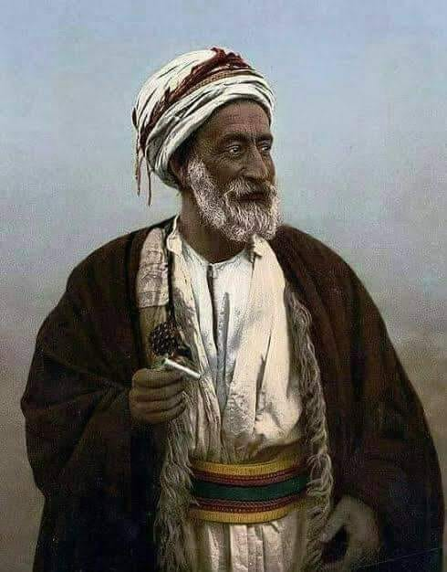

Usman encuentra muchos seguidores con el pasar del tiempo, la toma de Gobir parecía estar cerca con el tiempo. Sin emabrgo, debido al paupérrimo equipamiento de los fieles a Usman y que los defensores tenían algo de entrenamiento previo. El asedio fue parado por los esfuerzos de los defensores, los seguidores de Usman aniquilados y el orador fue tomado prisionaero para después ser ejetucado en público de la forma más horrible posible.
